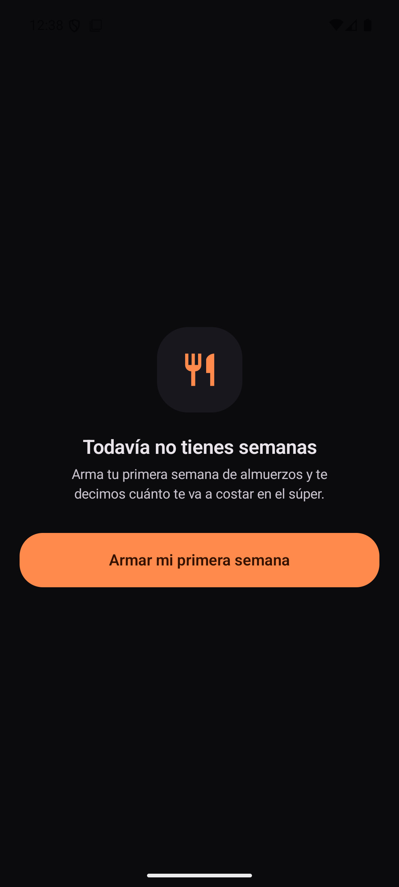
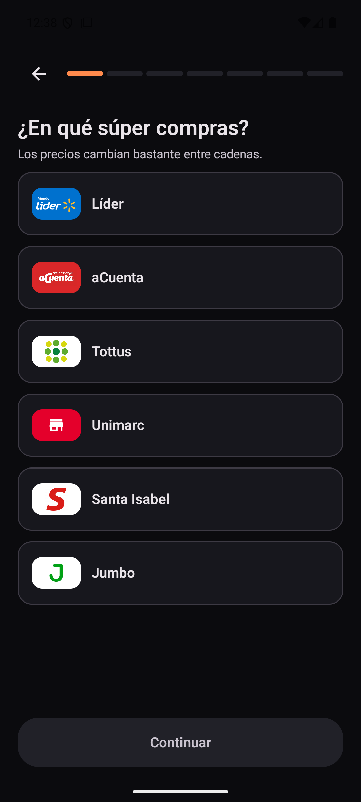
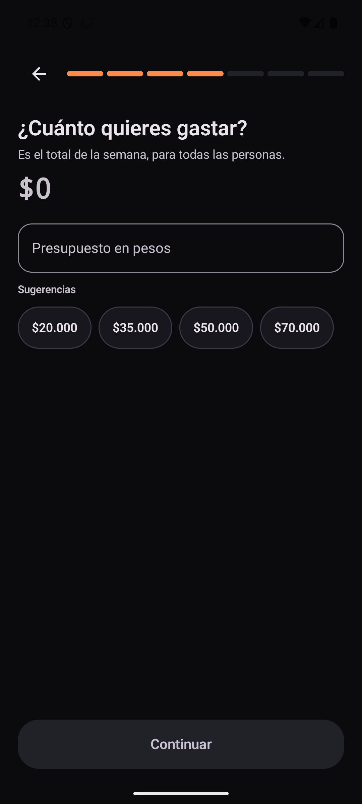
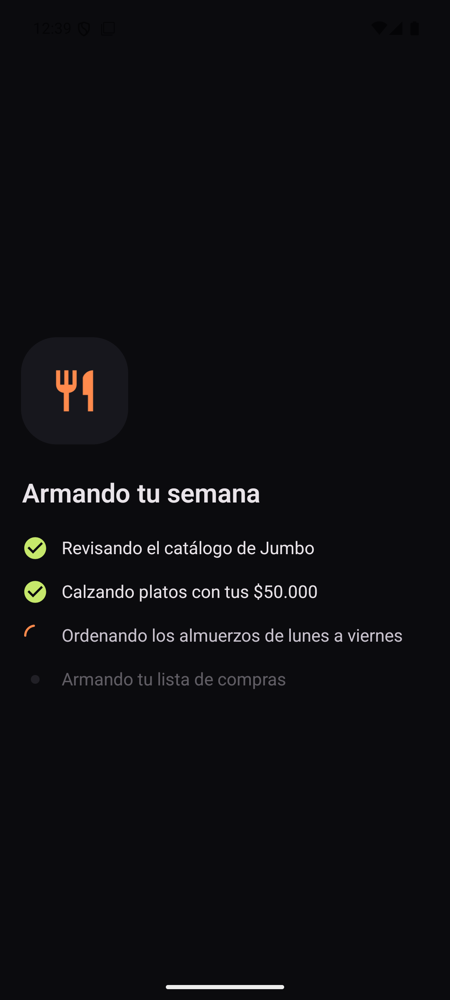
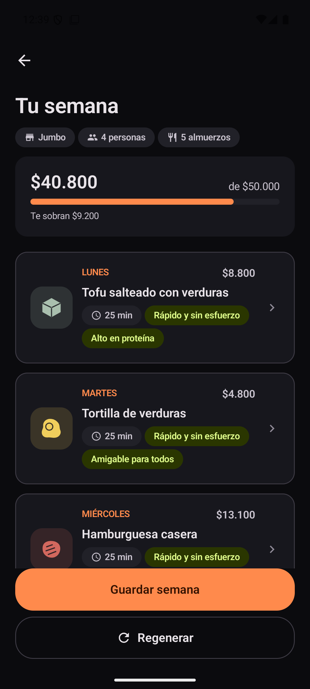
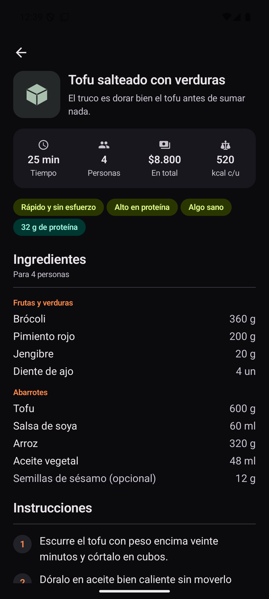
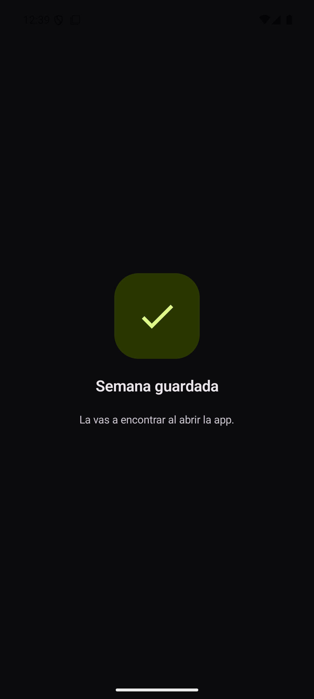
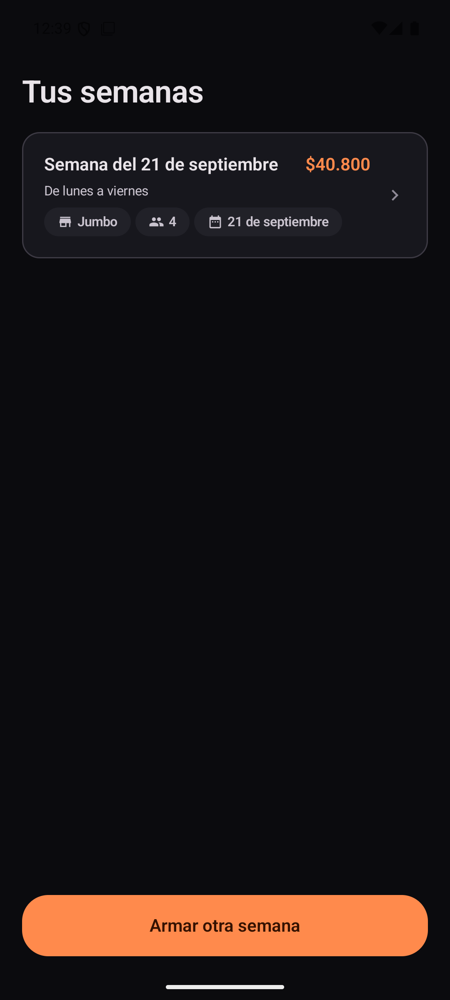
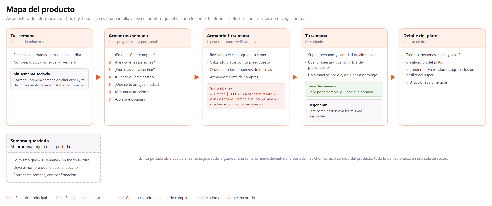
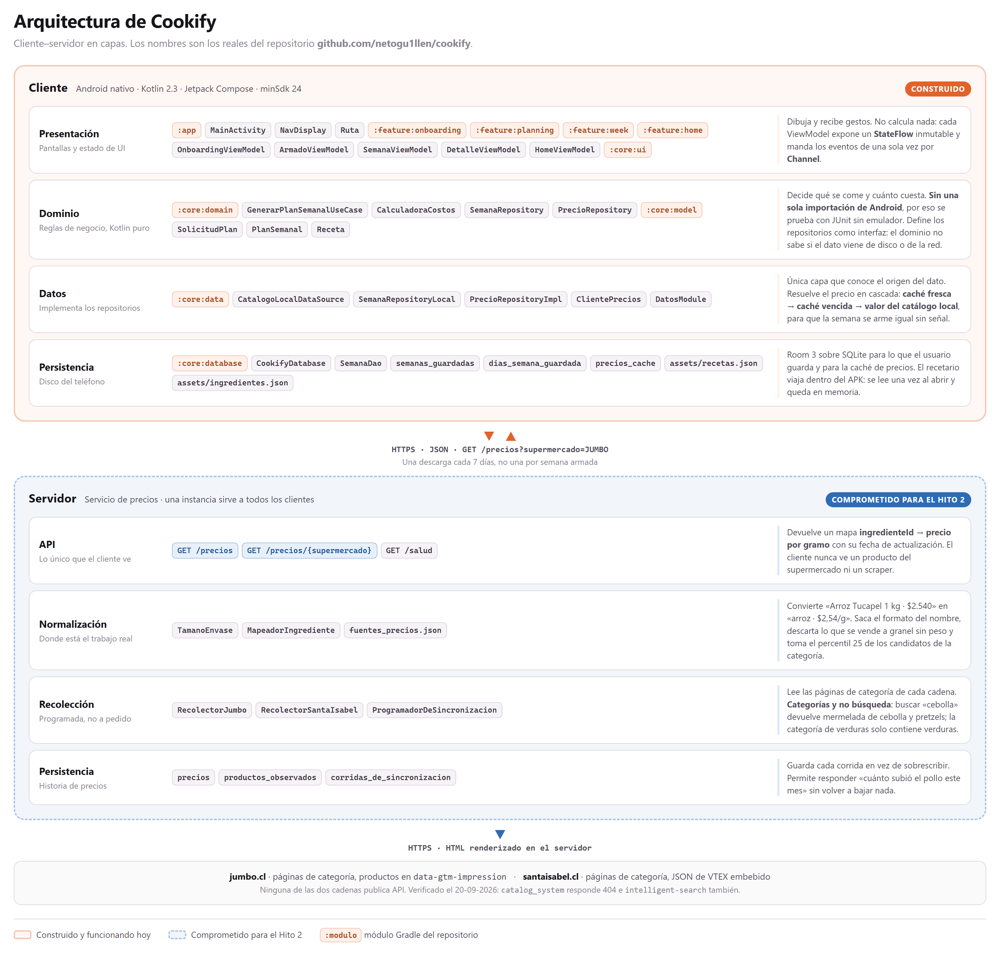

<meta charset="utf-8">
<title>Cookify · Propuesta</title>
<link rel="stylesheet" href="https://fonts.googleapis.com/css2?family=Bricolage+Grotesque:opsz,wght@12..96,600;12..96,700;12..96,800&family=Archivo:ital,wght@0,400;0,500;0,600;0,700;1,400&display=swap">
<style>
/*
 * Documento de propuesta del Hito 1. Se imprime con:
 *   msedge --headless=new --print-to-pdf=propuesta-cookify.pdf --no-pdf-header-footer
 *
 * La tapa es oscura y el cuerpo claro a proposito: la tapa vende, el cuerpo se lee.
 * Los numeros de pagina del indice estan escritos a mano y verificados contra el PDF
 * generado; si se agrega una seccion hay que revisarlos.
 */
@page { size: letter; margin: 0; }

:root {
  --papel:   #FDFCFB;
  --tinta:   #17161A;
  --media:   #4E4952;
  --suave:   #877F8C;
  --linea:   #E6E0E6;
  --ambar:   #D75A20;
  --ambar-suave: #FDF2EC;
  --oscuro:  #0B0B0E;
  --display: "Bricolage Grotesque", "Segoe UI", system-ui, sans-serif;
  --cuerpo:  "Archivo", "Segoe UI", system-ui, sans-serif;
}

* { box-sizing: border-box; margin: 0; padding: 0;
    -webkit-print-color-adjust: exact; print-color-adjust: exact; }

html { background: #55505a; }
body { font-family: var(--cuerpo); color: var(--tinta); font-size: 9.4pt; line-height: 1.45; }

/* Cada .hoja es una pagina carta exacta. */
.hoja {
  width: 8.5in; height: 11in; background: var(--papel);
  margin: 0 auto; padding: 0.92in 0.95in 0.8in;
  position: relative; overflow: hidden;
  page-break-after: always; break-after: page;
}
.hoja:last-child { page-break-after: auto; break-after: auto; }
@media screen { .hoja { margin-bottom: 18px; box-shadow: 0 8px 26px rgba(0,0,0,.4); } }

/* ---- encabezado y pie corridos ---- */
.corrido {
  position: absolute; top: 0.5in; left: 0.95in; right: 0.95in;
  display: flex; justify-content: space-between; align-items: center;
  font-size: 8pt; color: var(--suave); letter-spacing: .3px;
  padding-bottom: 5px; border-bottom: 1px solid var(--linea);
}
.corrido .m { font-family: var(--display); font-weight: 700; color: var(--tinta); letter-spacing: -.2px; }
.corrido .m i { color: var(--ambar); font-style: normal; }
.folio {
  position: absolute; bottom: 0.52in; left: 0.95in; right: 0.95in;
  display: flex; justify-content: space-between;
  font-size: 8pt; color: var(--suave);
  padding-top: 5px; border-top: 1px solid var(--linea);
}

/* ---- tipografia ---- */
h1 { font-family: var(--display); font-size: 25pt; font-weight: 700; letter-spacing: -.7px;
     line-height: 1.12; margin-bottom: 4pt; text-wrap: balance; }
h2 { font-family: var(--display); font-size: 13.5pt; font-weight: 700; letter-spacing: -.3px;
     margin: 13pt 0 5pt; }
h3 { font-family: var(--display); font-size: 11.5pt; font-weight: 600; margin: 13pt 0 4pt; }
.seccion { font-family: var(--display); font-size: 8.5pt; font-weight: 700; letter-spacing: 2px;
           text-transform: uppercase; color: var(--ambar); margin-bottom: 9pt; }
.bajada { font-size: 12pt; color: var(--media); line-height: 1.5; margin-bottom: 15pt; max-width: 46em; }
p { margin-bottom: 7pt; }
p + h2, ul + h2, table + h2, figure + h2, .caja + h2 { margin-top: 17pt; }
strong { font-weight: 600; }
em { font-style: italic; }
a { color: var(--ambar); text-decoration: none; }

ul, ol { margin: 0 0 8pt 1.1em; }
li { margin-bottom: 4pt; }
ul.limpia { list-style: none; margin-left: 0; }
ul.limpia li { padding-left: 1em; text-indent: -1em; }
ul.limpia li::before { content: "— "; color: var(--ambar); }

/* ---- piezas ---- */
.cifras { display: flex; gap: 12pt; margin: 12pt 0; }
.cifra { flex: 1; background: var(--ambar-suave); border-radius: 8px; padding: 10pt 11pt; }
.cifra .n { font-family: var(--display); font-size: 19pt; font-weight: 700; color: var(--ambar);
            line-height: 1; letter-spacing: -.5px; }
.cifra .t { font-size: 8.4pt; color: var(--media); margin-top: 4pt; line-height: 1.35; }

table { width: 100%; border-collapse: collapse; margin: 8pt 0; font-size: 8.8pt; }
th { text-align: left; font-weight: 600; font-size: 7.6pt; text-transform: uppercase;
     letter-spacing: .7px; color: var(--suave); padding: 5pt 7pt 5pt 0;
     border-bottom: 1.5px solid var(--tinta); }
td { padding: 4pt 6pt 4pt 0; border-bottom: 1px solid var(--linea); vertical-align: top; }
td.num, th.num { text-align: right; font-variant-numeric: tabular-nums; padding-right: 0; }
tr.destaca td { background: var(--ambar-suave); font-weight: 600; }

.caja { border-left: 3px solid var(--ambar); background: var(--ambar-suave);
        padding: 7pt 11pt; margin: 9pt 0; border-radius: 0 7px 7px 0; }
.caja p:last-child { margin-bottom: 0; }
.caja .rotulo { font-family: var(--display); font-size: 8pt; font-weight: 700; letter-spacing: 1.4px;
                text-transform: uppercase; color: var(--ambar); margin-bottom: 4pt; }

.cita { font-family: var(--display); font-size: 13pt; font-weight: 600; line-height: 1.35;
        color: var(--tinta); margin: 13pt 0; padding-left: 13pt; border-left: 3px solid var(--ambar);
        letter-spacing: -.2px; }

figure { margin: 11pt 0; break-inside: avoid; }
figure img { width: 100%; max-height: 5.4in; object-fit: contain; display: block; margin-inline: auto; border: 1px solid var(--linea); border-radius: 6px; }
figcaption { font-size: 8.2pt; color: var(--suave); margin-top: 5pt; line-height: 1.4; }
figcaption b { color: var(--media); font-weight: 600; }

.capturas { display: flex; gap: 9pt; margin: 11pt 0; justify-content: center; }
.capturas figure { flex: 0 1 auto; margin: 0; }
.capturas img { height: 2.24in; width: auto; border-radius: 9px; border: 1px solid var(--linea); }

code, .mono { font-family: ui-monospace, "Cascadia Mono", Consolas, monospace; font-size: 8.8pt; }

/* ---- indice ---- */
.indice { list-style: none; margin: 0; }
.indice li { display: flex; align-items: baseline; gap: 6pt; margin-bottom: 7pt; font-size: 10.4pt; }
.indice .t { white-space: nowrap; }
.indice .p { flex: 1; border-bottom: 1px dotted var(--linea); transform: translateY(-3px); }
.indice .n { font-variant-numeric: tabular-nums; color: var(--suave); }
.indice li.mayor { font-family: var(--display); font-weight: 700; font-size: 11.4pt; margin-top: 13pt; }
.indice li.mayor .n { color: var(--tinta); }
.indice li.menor { padding-left: 15pt; font-size: 9.8pt; color: var(--media); margin-bottom: 5pt; }

/* ---- referencias ---- */
.refs { font-size: 9.6pt; }
.refs p { padding-left: 1.6em; text-indent: -1.6em; margin-bottom: 8pt; line-height: 1.5; }
</style>

<!-- ══════════════ 1 · TAPA ══════════════ -->
<section class="hoja" style="background:var(--oscuro);color:#F5F1F0;padding:0">
  <div style="position:absolute;top:-2.2in;left:50%;transform:translateX(-50%);width:9in;height:7in;
              border-radius:50%;background:radial-gradient(closest-side,rgba(255,122,61,.34),rgba(255,122,61,.07) 58%,transparent 74%)"></div>
  <div style="position:relative;padding:1.5in 1.1in 0;text-align:center">
    
    <div style="font-family:var(--display);font-size:68px;font-weight:800;letter-spacing:-2.4px;line-height:1">
      Cook<span style="color:#FF7A3D">ify</span></div>
    <p style="margin:.3in auto 0;max-width:5.2in;font-size:16.5px;line-height:1.5;color:#C9C2CC;font-weight:300">
      Para quien cocina en casa con un presupuesto contado, Cookify arma
      <b style="color:#F5F1F0;font-weight:600">una semana de almuerzos que cabe en lo que puede gastar</b>,
      con el precio real del supermercado donde compra.</p>
    <div style="display:flex;justify-content:center;gap:.42in;margin:.58in auto 0;padding-top:.34in;
                border-top:1px solid rgba(255,255,255,.11);max-width:5.6in">
      <div><div style="font-size:25px;font-weight:700;color:#FF7A3D;letter-spacing:-.6px">$307.947</div>
        <div style="font-size:10.5px;color:#8E8792;margin-top:3px;line-height:1.35">gasta al mes en comida<br>el hogar chileno promedio</div></div>
      <div><div style="font-size:25px;font-weight:700;color:#FF7A3D;letter-spacing:-.6px">237,8%</div>
        <div style="font-size:10.5px;color:#8E8792;margin-top:3px;line-height:1.35">de diferencia por la misma<br>canasta según el supermercado</div></div>
      <div><div style="font-size:25px;font-weight:700;color:#FF7A3D;letter-spacing:-.6px">69</div>
        <div style="font-size:10.5px;color:#8E8792;margin-top:3px;line-height:1.35">recetas chilenas ya<br>cargadas y funcionando</div></div>
    </div>
  </div>
  <div style="position:absolute;left:1.1in;right:1.1in;bottom:2.35in;text-align:center">
    <div style="font-size:10.5px;letter-spacing:2.4px;text-transform:uppercase;color:#FF7A3D;font-weight:700;margin-bottom:9px">
      Documento de propuesta · Hito 1</div>
    <div style="font-size:22px;font-weight:600;letter-spacing:-.3px">Proyecto semestral · Arquitectura de Desarrollo (Móvil y Web)</div>
  </div>
  <div style="position:absolute;left:1.1in;right:1.1in;bottom:.85in;display:flex;justify-content:space-between;
              align-items:flex-end;padding-top:.2in;border-top:1px solid rgba(255,255,255,.11);
              font-size:11.5px;color:#8E8792;line-height:1.6">
    <div><b style="color:#F5F1F0;font-weight:600;display:block;font-size:13px">Ernesto Guillén Guerrero</b>300050336</div>
    <div style="text-align:right"><b style="color:#F5F1F0;font-weight:600;display:block;font-size:13px">INGT1003</b>
      Escuela de Ingeniería Civil · Universidad Mayor<br>Segundo semestre 2026</div>
  </div>
</section>

<!-- ══════════════ 2 · ÍNDICE ══════════════ -->
<section class="hoja">
  <div class="corrido"><span class="m">Cook<i>ify</i></span><span>Documento de propuesta · Hito 1</span></div>
  <h1>Índice</h1>
  <div style="margin-top:22pt">
  <ul class="indice">
    <li class="mayor"><span class="t">Introducción</span><span class="p"></span><span class="n">3</span></li>

    <li class="mayor"><span class="t">1 · El problema y a quién le duele</span><span class="p"></span><span class="n">4</span></li>
    <li class="menor"><span class="t">1.1 La comida es el mayor gasto del hogar chileno</span><span class="p"></span><span class="n">4</span></li>
    <li class="menor"><span class="t">1.2 El mismo carro cuesta hasta 238 % más según dónde se compre</span><span class="p"></span><span class="n">4</span></li>
    <li class="menor"><span class="t">1.3 Quién es y qué hace hoy sin nosotros</span><span class="p"></span><span class="n">5</span></li>

    <li class="mayor"><span class="t">2 · La propuesta</span><span class="p"></span><span class="n">6</span></li>
    <li class="menor"><span class="t">2.1 La promesa</span><span class="p"></span><span class="n">6</span></li>
    <li class="menor"><span class="t">2.2 El producto hoy</span><span class="p"></span><span class="n">7</span></li>

    <li class="mayor"><span class="t">3 · Arquitectura de información</span><span class="p"></span><span class="n">8</span></li>

    <li class="mayor"><span class="t">4 · Arquitectura técnica</span><span class="p"></span><span class="n">9</span></li>
    <li class="menor"><span class="t">4.1 Cliente, servidor y capas</span><span class="p"></span><span class="n">9</span></li>
    <li class="menor"><span class="t">4.2 Qué hace cada capa al armar una semana</span><span class="p"></span><span class="n">10</span></li>
    <li class="menor"><span class="t">4.3 Por qué el precio necesita un servidor</span><span class="p"></span><span class="n">12</span></li>

    <li class="mayor"><span class="t">5 · Decisiones de tecnología</span><span class="p"></span><span class="n">14</span></li>
    <li class="menor"><span class="t">5.1 Plataforma del cliente</span><span class="p"></span><span class="n">14</span></li>
    <li class="menor"><span class="t">5.2 Navegación y renderizado</span><span class="p"></span><span class="n">14</span></li>
    <li class="menor"><span class="t">5.3 Persistencia y servidor</span><span class="p"></span><span class="n">15</span></li>

    <li class="mayor"><span class="t">6 · Lo que viene</span><span class="p"></span><span class="n">18</span></li>
    <li class="mayor"><span class="t">Conclusión</span><span class="p"></span><span class="n">19</span></li>
    <li class="mayor"><span class="t">Bibliografía</span><span class="p"></span><span class="n">20</span></li>
    <li class="mayor"><span class="t">Anexos</span><span class="p"></span><span class="n">21</span></li>
  </ul>
  </div>
  <div class="folio"><span>Cookify · Propuesta</span><span>2</span></div>
</section>

<!-- ══════════════ 3 · INTRODUCCIÓN ══════════════ -->
<section class="hoja">
  <div class="corrido"><span class="m">Cook<i>ify</i></span><span>Documento de propuesta · Hito 1</span></div>
  <div class="seccion">Introducción</div>
  <h1>Todos los domingos alguien hace la misma cuenta mal</h1>
  <p class="bajada">Abrir el refrigerador, decidir qué se va a comer esta semana y calcular
  si la plata alcanza. Se hace de memoria, se hace mal, y se paga la diferencia en el
  supermercado.</p>

  <p>Planificar una semana de comida es un problema aritmético disfrazado de problema
  doméstico. Hay que elegir siete platos que no se repitan, que le gusten a quienes van a
  comerlos, que se puedan cocinar con lo que hay en la cocina, y que sumados no pasen de
  cierta cifra. Nadie tiene ese cálculo en la cabeza, así que en la práctica se resuelve de
  dos formas: comprando de más por si acaso, o improvisando cada día y comprando cuatro
  veces por semana.</p>

  <p>Las dos salen caras. La primera termina en comida que se bota; la segunda, en compras
  chicas y frecuentes donde el precio unitario es peor y las decisiones se toman con
  hambre.</p>

  <div class="cita">Cookify no propone recetas. Propone una semana completa que cabe en
  una cifra que el usuario escribió.</div>

  <p>Este documento presenta Cookify: qué problema resuelve y con qué evidencia se afirma
  que existe, a quién está dirigido, cómo se organiza el producto por dentro, qué
  arquitectura lo sostiene y qué decisiones de tecnología se tomaron, con sus costos
  asumidos por escrito.</p>

  <p>Una aclaración sobre el estado del proyecto. La aplicación descrita <strong>no es una
  maqueta</strong>: el recorrido completo está construido y funcionando, con un recetario
  de 69 platos chilenos, un motor de planificación probado y persistencia local. Las
  imágenes de este documento son capturas de la aplicación corriendo en un dispositivo, no
  diseños. Lo que queda comprometido para los hitos siguientes está señalado como tal en
  cada sección donde aparece.</p>

  <div class="caja">
    <div class="rotulo">Cómo leer este documento</div>
    <p>Las secciones 1 y 2 son la propuesta comercial: el problema, la evidencia y la
    promesa. Las secciones 3 a 5 son la respuesta técnica: cómo se organiza la información,
    qué arquitectura la sostiene y por qué se eligió cada herramienta. La sección 6 dice
    qué falta y cuándo.</p>
  </div>

  <div class="folio"><span>Cookify · Propuesta</span><span>3</span></div>
</section>

<!-- ══════════════ 4 · PROBLEMA ══════════════ -->
<section class="hoja">
  <div class="corrido"><span class="m">Cook<i>ify</i></span><span>1 · El problema y a quién le duele</span></div>
  <div class="seccion">Capítulo 1</div>
  <h1>El problema y a quién le duele</h1>
  <p class="bajada">Tres cifras verificadas en la fuente original delimitan el problema:
  cuánto pesa, cuánto varía y cuánto se pierde.</p>

  <h2>1.1 La comida es el mayor gasto del hogar chileno</h2>
  <p>La IX Encuesta de Presupuestos Familiares del Instituto Nacional de Estadísticas,
  levantada entre octubre de 2021 y septiembre de 2022 sobre 15.134 hogares de 79 comunas
  en las 16 regiones del país, midió que el hogar promedio gasta <strong>$1.451.782</strong>
  al mes. De esa cifra, <strong>$307.947 se van en alimentos y bebidas no alcohólicas</strong>:
  el <strong>21,2 %</strong> del total, y la primera categoría de gasto por delante de
  vivienda y de transporte.</p>

  <p>El dato que importa no es solo el tamaño sino la dirección: esa proporción
  <strong>creció 2,5 puntos porcentuales</strong> respecto de la encuesta anterior. La
  comida pesa cada vez más en el presupuesto familiar.</p>

  <div class="cifras">
    <div class="cifra"><div class="n">$307.947</div><div class="t">gasto mensual del hogar en alimentos</div></div>
    <div class="cifra"><div class="n">21,2 %</div><div class="t">del gasto total, la primera categoría</div></div>
    <div class="cifra"><div class="n">+2,5 pp</div><div class="t">de aumento respecto de la EPF anterior</div></div>
  </div>

  <p>Sobre $307.947 mensuales, equivocarse en un 20 % son <strong>$61.589 al mes</strong>,
  o $739.000 en un año. No es un margen de error tolerable: es una cuota de algo.</p>

  <h2>1.2 El mismo carro cuesta hasta 238 % más según dónde se compre</h2>
  <p>El SERNAC publicó el 7 de septiembre de 2026 su Cotizador de Fiestas Patrias,
  construido sobre <strong>250.000 precios de 1.300 sucursales de 47 locales</strong>
  —40 supermercados y 7 carnicerías— a lo largo del país. Comparando una canasta de seis
  productos idénticos:</p>

  <table>
    <tr><th>Canasta de seis productos idénticos</th><th class="num">Precio</th></tr>
    <tr><td>La más barata</td><td class="num">$23.139</td></tr>
    <tr><td>El promedio del mercado</td><td class="num">$45.290</td></tr>
    <tr><td>La más cara</td><td class="num">$78.197</td></tr>
    <tr class="destaca"><td>Diferencia por exactamente los mismos productos</td><td class="num">$55.058 · 237,8 %</td></tr>
  </table>

  <p>Un solo producto de esa canasta, el costillar de cerdo de 1,2 kg, varía
  <strong>$14.004</strong> entre su precio mínimo ($6.588) y su máximo ($20.592).</p>

  <div class="caja">
    <div class="rotulo">Lo que esto significa para el producto</div>
    <p>El supermercado donde se compra no es un detalle de configuración: es la diferencia
    entre que el presupuesto alcance o no. Por eso en Cookify es la <em>primera</em>
    pregunta del recorrido y no un ajuste escondido.</p>
  </div>

  <div class="folio"><span>Cookify · Propuesta</span><span>4</span></div>
</section>

<section class="hoja">
  <div class="corrido"><span class="m">Cook<i>ify</i></span><span>1 · El problema y a quién le duele</span></div>

  <h2 style="margin-top:0">1.3 Quién es y qué hace hoy sin nosotros</h2>
  <p>El usuario objetivo es <strong>quien cocina para su casa y tiene el presupuesto
  contado</strong>. No es alguien que busca inspiración gastronómica: es alguien que ya
  sabe que tiene que cocinar y necesita que la cuenta cierre.</p>

  <p>Concretamente: un hogar de dos a cinco personas, que hace una compra grande a la
  semana o cada quincena, que cocina el almuerzo en casa al menos de lunes a viernes, y
  para quien pasarse del presupuesto tiene consecuencias reales en el resto del mes.</p>

  <h3>La competencia real no es otra aplicación</h3>
  <p>Es importante nombrarla bien, porque define contra qué se compara el producto. Hoy
  esta persona resuelve el problema de tres maneras, y ninguna involucra software:</p>

  <ul class="limpia">
    <li><strong>De memoria.</strong> Repite las mismas seis o siete preparaciones que sabe
    hacer, sin calcular el costo. Funciona, pero aburre y no controla el gasto.</li>
    <li><strong>Con una lista escrita a mano.</strong> Anota lo que cree que necesita, y
    descubre el total en la caja. El presupuesto se verifica cuando ya es tarde.</li>
    <li><strong>Improvisando.</strong> Decide el mismo día y compra a diario. Es lo más caro
    de todo y lo que más comida bota.</li>
  </ul>

  <p>Las aplicaciones de recetas que existen no compiten con esto porque resuelven otro
  problema: proponen platos, no presupuestos. Ninguna responde la pregunta que esta persona
  realmente tiene, que no es <em>«¿qué cocino?»</em> sino <em>«¿me alcanza?»</em>.</p>

  <h3>El desperdicio, la otra cara del mismo problema</h3>
  <p>Chile genera <strong>1,62 millones de toneladas</strong> de residuos de alimentos al
  año. El estudio <em>Cuánto alimento desechan los chilenos</em> de la Universidad de Talca
  determinó que <strong>el 95 % de las personas considera normal botar la comida acumulada
  en el refrigerador</strong>.</p>

  <p>Ese desperdicio no es principalmente de sobras del plato: es de comida que se compró
  sin un plan y nunca se cocinó. Es exactamente el desperdicio que ataca comprar para los
  días y las personas que efectivamente se van a cocinar, que es lo que Cookify calcula.</p>

  <div class="caja">
    <div class="rotulo">El problema en una frase</div>
    <p>Quien cocina en casa con el presupuesto contado no tiene forma de saber, antes de ir
    al supermercado, si lo que piensa cocinar esta semana cabe en la plata que tiene.</p>
  </div>

  <div class="folio"><span>Cookify · Propuesta</span><span>5</span></div>
</section>

<!-- ══════════════ 6 · PROPUESTA ══════════════ -->
<section class="hoja">
  <div class="corrido"><span class="m">Cook<i>ify</i></span><span>2 · La propuesta</span></div>
  <div class="seccion">Capítulo 2</div>
  <h1>La propuesta</h1>

  <h2>2.1 La promesa</h2>
  <div class="cita">Para quien cocina en casa con un presupuesto contado, Cookify arma una
  semana de almuerzos que cabe en lo que puede gastar, con el precio del supermercado donde
  compra.</div>

  <p>La promesa es verificable, que es lo que la separa de un eslogan. Si el usuario dice
  que tiene $50.000, la aplicación entrega una semana cuyo costo total es menor o igual a
  $50.000 <em>o</em> le dice exactamente cuánto le falta y cuál es la semana más barata
  posible. No hay un tercer resultado.</p>

  <h3>Qué entrega concretamente</h3>
  <ul class="limpia">
    <li>Un plato de almuerzo para cada día que el usuario eligió cocinar, sin repetir.</li>
    <li>El costo de cada día y el total de la semana, contra el presupuesto declarado.</li>
    <li>Para cada plato: tiempo de preparación, clasificación, calorías, ingredientes ya
    escalados a la cantidad de personas y agrupados por pasillo del supermercado, e
    instrucciones numeradas.</li>
    <li>La semana guardada, que sigue ahí al cerrar y volver a abrir la aplicación.</li>
  </ul>

  <h3>Qué no hace, por decisión</h3>
  <p>Nombrar los límites es parte de la propuesta. Cookify <strong>solo planifica
  almuerzos</strong>, no las tres comidas: es la comida que más se cocina en casa y la que
  concentra el gasto. <strong>No tiene cuentas de usuario</strong> ni red social de recetas.
  <strong>No cotiza en línea en tiempo real</strong>: estima con precios de referencia por
  cadena, y el Hito 2 reemplaza esa estimación por mediciones reales.</p>

  <h3>Las siete preguntas</h3>
  <p>El recorrido de entrada son siete preguntas, una por pantalla, en este orden:</p>

  <table>
    <tr><th style="width:30pt">#</th><th>Pregunta</th><th>Para qué se usa la respuesta</th></tr>
    <tr><td>1</td><td>¿En qué súper compras?</td><td>Determina la tabla de precios</td></tr>
    <tr><td>2</td><td>¿Para cuántas personas?</td><td>Escala cada ingrediente y el costo</td></tr>
    <tr><td>3</td><td>¿Qué días vas a cocinar?</td><td>Define cuántos platos y en qué orden</td></tr>
    <tr><td>4</td><td>¿Cuánto quieres gastar?</td><td>Es la restricción que el motor debe cumplir</td></tr>
    <tr><td>5</td><td>¿Qué se te antoja?</td><td>Puntúa y ordena las recetas candidatas</td></tr>
    <tr><td>6</td><td>¿Alguna restricción?</td><td>Filtra el recetario antes de elegir</td></tr>
    <tr><td>7</td><td>¿Con qué cocinas?</td><td>Descarta recetas imposibles de preparar</td></tr>
  </table>

  <p>El orden no es casual: las preguntas 6 y 7 <em>filtran</em> el recetario y la 4 lo
  <em>restringe</em>, mientras que la 5 solo <em>ordena</em>. Preguntar primero lo que más
  reduce el espacio de búsqueda es lo que permite detectar temprano cuándo una combinación
  no tiene solución.</p>

  <div class="folio"><span>Cookify · Propuesta</span><span>6</span></div>
</section>

<section class="hoja">
  <div class="corrido"><span class="m">Cook<i>ify</i></span><span>2 · La propuesta</span></div>
  <h2 style="margin-top:0">2.2 El producto hoy</h2>
  <p>Todo lo que se ve en estas páginas está construido y funcionando. Las imágenes son
  capturas de la aplicación corriendo, tomadas en una sola sesión.</p>

  <div class="capturas">
    <figure></figure>
    <figure></figure>
    <figure></figure>
    <figure></figure>
  </div>
  <figcaption style="margin-top:0"><b>Del vacío al armado.</b> La portada sin semanas es una
  sola invitación. Las siete preguntas se hacen de a una. La espera nombra los datos reales
  del usuario en vez de mostrar un porcentaje.</figcaption>

  <div class="capturas" style="margin-top:14pt">
    <figure></figure>
    <figure></figure>
    <figure></figure>
    <figure></figure>
  </div>
  <figcaption style="margin-top:0"><b>El resultado.</b> La semana con su costo contra el
  presupuesto, el detalle de un plato con los ingredientes escalados y agrupados por pasillo,
  la confirmación al guardar, y la semana instalada en la portada.</figcaption>

  <h3>Estado por componente</h3>
  <table>
    <tr><th>Componente</th><th>Estado</th></tr>
    <tr><td>Recorrido completo, de la portada vacía a la semana guardada</td><td>Funcionando</td></tr>
    <tr><td>Recetario de 69 platos chilenos y 98 ingredientes con precio</td><td>Cargado</td></tr>
    <tr><td>Motor de planificación determinista, probado con JUnit</td><td>Funcionando</td></tr>
    <tr><td>Persistencia local en Room 3, sobrevive al cierre</td><td>Funcionando</td></tr>
    <tr><td>Manejo de presupuesto insuficiente y de catálogo insuficiente</td><td>Funcionando</td></tr>
    <tr><td>Servicio de precios reales por cadena</td><td>Comprometido · Hito 2</td></tr>
    <tr><td>Lista de compras consolidada de la semana</td><td>Comprometido · Hito 2</td></tr>
  </table>

  <div class="folio"><span>Cookify · Propuesta</span><span>7</span></div>
</section>

<!-- ══════════════ 8 · ARQUITECTURA DE INFORMACIÓN ══════════════ -->
<section class="hoja">
  <div class="corrido"><span class="m">Cook<i>ify</i></span><span>3 · Arquitectura de información</span></div>
  <div class="seccion">Capítulo 3</div>
  <h1>Arquitectura de información</h1>
  <p class="bajada">Cómo se agrupa, se jerarquiza y se nombra todo lo que el producto
  contiene.</p>

  <figure>
    
    <figcaption><b>Figura 1.</b> Mapa del producto. Cada caja es una pantalla y lleva el
    nombre que el usuario lee en el teléfono; las flechas son las rutas de navegación
    reales.</figcaption>
  </figure>

  <h2>La regla de nombres</h2>
  <p>Cada sección se nombra con el vocabulario del usuario y no con el del sistema. La
  portada se llama <strong>«Tus semanas»</strong> y no «Listado de planes»; la espera se
  llama <strong>«Armando tu semana»</strong> y no «Procesando». Los nombres técnicos
  —<code>SemanaRepository</code>, <code>GenerarPlanSemanalUseCase</code>— existen, pero
  viven en el capítulo 4 y nunca en la pantalla.</p>

  <h2>La jerarquía</h2>
  <p>El producto tiene <strong>un solo nivel de navegación principal</strong>. No hay menú
  lateral ni pestañas, porque la aplicación hace una cosa y esconder esa cosa detrás de un
  menú sería trabajo adicional para el usuario sin beneficio.</p>

  <p>Desde la portada salen exactamente dos caminos: armar una semana nueva, o abrir una
  guardada. Todo lo demás son pasos dentro de esos dos caminos.</p>

  <h2>El único ciclo cerrado</h2>
  <p>La navegación avanza en una sola dirección salvo en un punto: <strong>guardar una
  semana devuelve a la portada</strong>, y desde la portada se puede abrir esa misma semana.
  Ese ciclo es deliberado: es el que convierte un uso puntual en un hábito, porque la
  siguiente vez que la persona abra la aplicación lo primero que verá es lo que armó la
  semana pasada.</p>

  <div class="caja">
    <div class="rotulo">Una decisión de agrupación</div>
    <p>Las siete preguntas podrían haber sido una sola pantalla con siete campos. Se
    separaron porque cada respuesta cambia lo que la siguiente significa —el presupuesto se
    juzga distinto según cuántas personas y cuántos días— y porque una pantalla con siete
    campos vacíos se abandona.</p>
  </div>

  <div class="folio"><span>Cookify · Propuesta</span><span>8</span></div>
</section>

<!-- ══════════════ 9 · ARQUITECTURA TÉCNICA ══════════════ -->
<section class="hoja">
  <div class="corrido"><span class="m">Cook<i>ify</i></span><span>4 · Arquitectura técnica</span></div>
  <div class="seccion">Capítulo 4</div>
  <h1>Arquitectura técnica</h1>
  <p class="bajada">Cliente, servidor y capas, con los nombres reales de los componentes
  del repositorio.</p>

  <h2>4.1 Cliente, servidor y capas</h2>
  <p>Cookify es una aplicación <strong>cliente–servidor en capas</strong>. El cliente es una
  aplicación Android nativa que hoy funciona completa y sin red. El servidor es un servicio
  de precios que se construye en el Hito 2 y cuya necesidad está justificada con mediciones
  propias en la sección 4.3.</p>

  <figure>
    
    <figcaption><b>Figura 2.</b> Arquitectura cliente–servidor en capas. En ámbar sólido, lo
    construido y funcionando; en azul punteado, lo comprometido para el Hito 2. Los nombres
    son los de los módulos y clases del repositorio.</figcaption>
  </figure>

  <div class="folio"><span>Cookify · Propuesta</span><span>9</span></div>
</section>

<section class="hoja">
  <div class="corrido"><span class="m">Cook<i>ify</i></span><span>4 · Arquitectura técnica</span></div>

  <p style="margin-top:0">La regla que ordena el diseño es simple: <strong>cada capa solo
  conoce la que tiene debajo, y el dominio no conoce a ninguna</strong>. El módulo
  <code>:core:domain</code> no tiene una sola importación de Android, de modo que el motor de
  planificación se prueba con JUnit en la máquina virtual de Java, sin emulador.</p>

  <h3>Responsabilidades de cada capa</h3>
  <table>
    <tr><th>Capa</th><th>Módulos</th><th>De qué responde</th><th>De qué no</th></tr>
    <tr><td><strong>Presentación</strong></td><td><code>:app</code>, <code>:feature:*</code>, <code>:core:ui</code></td>
        <td>Dibujar y recibir gestos</td><td>No calcula precios ni elige recetas</td></tr>
    <tr><td><strong>Dominio</strong></td><td><code>:core:domain</code>, <code>:core:model</code></td>
        <td>Qué se come y cuánto cuesta</td><td>No sabe si el dato viene de disco o de red</td></tr>
    <tr><td><strong>Datos</strong></td><td><code>:core:data</code></td>
        <td>Resolver de dónde sale cada dato</td><td>No decide reglas de negocio</td></tr>
    <tr><td><strong>Persistencia</strong></td><td><code>:core:database</code>, <code>assets/</code></td>
        <td>Guardar y leer</td><td>No transforma nada</td></tr>
  </table>

  <p>El dominio define <code>SemanaRepository</code> y <code>PrecioRepository</code> como
  <strong>interfaces</strong>, y la capa de datos las implementa. Esa inversión de
  dependencias es lo que permitirá que el Hito 2 agregue el servidor <strong>sin tocar el
  motor de planificación</strong>: cambia quién responde el precio, no quién lo usa.</p>

  <h2>4.2 Qué hace cada capa al armar una semana</h2>
  <p>El recorrido completo del producto, desde el toque final del onboarding hasta la
  portada actualizada.</p>

  <table>
    <tr><th style="width:26pt">#</th><th style="width:78pt">Capa</th><th>Qué ocurre</th></tr>
    <tr><td>1</td><td>Presentación</td><td><code>OnboardingViewModel</code> guarda cada respuesta en un
      <code>SavedStateHandle</code>, que sobrevive a que Android mate el proceso, y valida en cada
      paso si se puede avanzar. Al terminar emite <code>EventoOnboarding.Listo(SolicitudPlan)</code>.</td></tr>
    <tr><td>2</td><td>Presentación</td><td><code>MainActivity</code> navega a <code>Ruta.Armado</code>.
      La ruta lleva la solicitud y una semilla, <strong>nunca el plan ya construido</strong>: así la
      navegación se serializa barata y el plan se reconstruye igual en cualquier momento.</td></tr>
    <tr><td>3</td><td>Dominio</td><td><code>GenerarPlanSemanalUseCase</code> filtra el recetario por
      restricción y artefactos, puntúa cada receta según los antojos, selecciona sin repetir plato ni
      abusar de una proteína, y ajusta a presupuesto. Es determinista: misma semilla, mismo plan.</td></tr>
    <tr><td>4</td><td>Datos</td><td><code>CatalogoLocalDataSource</code> entrega las 69 recetas y los 98
      ingredientes. Se leen una sola vez al abrir la aplicación y quedan en memoria: son de solo
      lectura, así que no pasan por la base de datos.</td></tr>
    <tr><td>5</td><td>Datos → Red</td><td><code>PrecioRepositoryImpl</code> resuelve el precio en cascada:
      caché fresca de menos de 7 días, luego caché vencida, y por último el valor del catálogo local.
      Si hay red y la caché venció, se pide al servidor en segundo plano. <em>(Hito 2)</em></td></tr>
  </table>

  <div class="folio"><span>Cookify · Propuesta</span><span>10</span></div>
</section>

<section class="hoja">
  <div class="corrido"><span class="m">Cook<i>ify</i></span><span>4 · Arquitectura técnica</span></div>
  <h3 style="margin-top:0">Qué hace cada capa al armar una semana <span style="font-weight:400;color:var(--suave)">· continuación</span></h3>
  <table>
    <tr><th style="width:26pt">#</th><th style="width:78pt">Capa</th><th>Qué ocurre</th></tr>
    <tr><td>6</td><td>Dominio</td><td><code>CalculadoraCostos</code> escala cada ingrediente por el número
      de personas y <strong>redondea hacia arriba lo que se vende por unidad</strong>: media palta no
      existe en el supermercado, y el presupuesto debe cobrar la palta entera que se va a pagar.</td></tr>
    <tr><td>7</td><td>Presentación</td><td>El motor termina en milisegundos, así que la espera escenifica
      cuatro verificaciones que nombran los datos reales del usuario. Si el presupuesto no alcanza, la
      secuencia se detiene en la etapa que falló y ofrece el mínimo viable calculado.</td></tr>
    <tr><td>8</td><td>Persistencia</td><td>Al guardar, <code>SemanaRepositoryLocal</code> escribe por
      <code>SemanaDao</code> en dos tablas con borrado en cascada. Se guarda <strong>el plato de cada
      día, no la semilla</strong>: si mañana cambia el recetario, la semana guardada no muta.</td></tr>
    <tr><td>9</td><td>Presentación</td><td><code>HomeViewModel</code> observa un <code>Flow</code> del
      repositorio, de modo que la portada se actualiza sola sin que nadie le avise.</td></tr>
  </table>

  <div class="folio"><span>Cookify · Propuesta</span><span>11</span></div>
</section>

<section class="hoja">
  <div class="corrido"><span class="m">Cook<i>ify</i></span><span>4 · Arquitectura técnica</span></div>

  <h3 style="margin-top:0">Dónde se nota el corte en capas</h3>
  <p>Un corte en capas se justifica cuando permite cambiar una pieza sin tocar las otras.
  En este proyecto eso ya ocurrió tres veces:</p>

  <ul class="limpia">
    <li><strong>El motor se prueba sin emulador.</strong> Como el dominio no importa nada de
    Android, las pruebas del planificador corren en la máquina virtual de Java en
    milisegundos, no en un emulador que tarda minutos en arrancar.</li>
    <li><strong>El precio va a cambiar de origen sin que el motor se entere.</strong> Hoy sale
    de un archivo en el teléfono; en el Hito 2 saldrá de un servidor. El motor pide un precio
    a una interfaz y no sabe ni le importa quién la implementa.</li>
    <li><strong>El recetario se valida sin abrir la aplicación.</strong> Una prueba verifica
    que cada ingrediente citado por una receta exista realmente en el catálogo de precios.
    Esa prueba ya encontró un error que habría llegado al usuario.</li>
  </ul>

  <h2>4.3 Por qué el precio necesita un servidor</h2>
  <p>Esta es la decisión arquitectónica central del proyecto, y no se tomó por conveniencia
  académica sino a partir de una medición propia.</p>

  <h3>La medición</h3>
  <p>El modelo inicial estimaba el precio de cada cadena multiplicando un precio base por
  una constante: Jumbo 1,15, Santa Isabel 1,08, y así. Para verificar si esa constante
  existe, se compararon los <strong>17 productos idénticos</strong> presentes el mismo día
  en el catálogo en línea de Jumbo y de Santa Isabel.</p>

  <table>
    <tr><th>Producto</th><th class="num">Jumbo</th><th class="num">Santa Isabel</th><th class="num">Diferencia</th></tr>
    <tr><td>Arroz Taj Mahal basmati 1 kg</td><td class="num">$5.890</td><td class="num">$5.890</td><td class="num">0,0 %</td></tr>
    <tr><td>Arroz Miraflores grano largo y ancho 1 kg</td><td class="num">$2.650</td><td class="num">$2.690</td><td class="num">+1,5 %</td></tr>
    <tr><td>Arroz Banquete grado 2 1 kg</td><td class="num">$2.300</td><td class="num">$2.090</td><td class="num">−9,1 %</td></tr>
    <tr><td>Arroz Miraflores basmati 400 g</td><td class="num">$2.430</td><td class="num">$2.990</td><td class="num">+23,0 %</td></tr>
    <tr><td>Arroz Tucapel gran selección 1 kg</td><td class="num">$1.790</td><td class="num">$2.540</td><td class="num">+41,9 %</td></tr>
    <tr class="destaca"><td>Arroz Tucapel Blue 1 kg</td><td class="num">$1.150</td><td class="num">$1.810</td><td class="num">+57,4 %</td></tr>
  </table>

  <p>La diferencia va de <strong>−9,1 % a +57,4 %, y depende del producto y no de la
  cadena</strong>. No existe un multiplicador por supermercado. Si el precio no se puede
  derivar de una constante, hay que <strong>medirlo</strong>.</p>

  <h3>Por qué medirlo desde el teléfono no sirve</h3>
  <p>Se midió también el costo de que cada teléfono hiciera ese trabajo por su cuenta:</p>

  <table>
    <tr><th>Operación</th><th class="num">Peso comprimido</th><th class="num">Tiempo</th></tr>
    <tr><td>Una categoría de Jumbo</td><td class="num">302 KB</td><td class="num">2,8 s</td></tr>
    <tr><td>Una búsqueda de Santa Isabel</td><td class="num">41 KB</td><td class="num">1,1 s</td></tr>
    <tr class="destaca"><td>Un refresco completo de precios</td><td class="num">6–9 MB</td><td class="num">10–20 s</td></tr>
  </table>

  <p>Tres razones para que eso viva en un servidor: <strong>el costo por cliente</strong>
  (6–9 MB por usuario contra una descarga que sirve a todos), <strong>la fragilidad</strong>
  (cuando una cadena cambia su sitio se cae un servicio que se arregla en una tarde, no una
  aplicación instalada que necesita pasar por la tienda) y <strong>la cortesía de red</strong>
  (un servicio consulta cada varias horas; mil teléfonos consultando es otra cosa).</p>

  <div class="folio"><span>Cookify · Propuesta</span><span>12</span></div>
</section>

<section class="hoja">
  <div class="corrido"><span class="m">Cook<i>ify</i></span><span>4 · Arquitectura técnica</span></div>

  <h3 style="margin-top:0">Lo que el servidor hace y el cliente no ve</h3>
  <p>La API devuelve un mapa de <code>ingredienteId</code> a precio por gramo, con su fecha
  de actualización. El cliente <strong>nunca ve un producto de supermercado</strong>: no
  sabe que existe «Arroz Tucapel 1 kg», solo que el arroz cuesta $2,54 por gramo en Jumbo.</p>

  <p>Entre una cosa y la otra hay dos problemas resueltos que justifican la capa de
  normalización:</p>

  <ul class="limpia">
    <li><strong>Sacar el formato del nombre.</strong> «Arroz Tucapel Pregraneado 1 kg» vale
    $2.540, pero el recetario pide gramos. Hay que leer el tamaño del envase desde el nombre
    del producto y descartar lo que se vende a granel sin peso declarado.</li>
    <li><strong>Leer categorías y no búsquedas.</strong> Buscar «cebolla» en el sitio de un
    supermercado devuelve mermelada de cebolla, pretzels con cebolla y condimento en polvo.
    La categoría de verduras, en cambio, solo contiene verduras. Es un filtro estructural en
    lugar de una lista negra de palabras que nunca termina.</li>
  </ul>

  <div class="caja">
    <div class="rotulo">Por qué esto importa más de lo que parece</div>
    <p>Un error de mapeo aquí <em>no falla</em>: cobra mal en silencio. En las pruebas, una
    búsqueda mal filtrada valoró la leche a $8,74 por mililitro cuando la real cuesta $1,06.
    Una receta con medio litro de leche habría pasado de $650 a $4.370 sin que nada se
    cayera. Por eso la normalización es una capa con su propia responsabilidad y sus propias
    pruebas, y no un detalle del recolector.</p>
  </div>

  <h3>Decisión de renderizado</h3>
  <p>La Unidad 1 pide decidir entre aplicación de página única y multipágina. El cliente de
  Cookify es <strong>nativo, no web</strong>, así que la decisión equivalente es entre una
  sola <em>Activity</em> con navegación declarativa y varias <em>Activities</em>
  independientes.</p>

  <p>Se eligió <strong>una sola Activity</strong>, que es el análogo directo de la aplicación
  de página única: hay un solo contenedor y el contenido se reemplaza dentro de él. La razón
  concreta es el onboarding: sus siete pasos comparten un mismo estado, y con Activities
  separadas ese estado tendría que serializarse y reconstruirse en cada paso. El costo
  asumido se detalla en la sección 5.2.</p>

  <div class="folio"><span>Cookify · Propuesta</span><span>13</span></div>
</section>

<!-- ══════════════ 13 · TECNOLOGÍAS ══════════════ -->
<section class="hoja">
  <div class="corrido"><span class="m">Cook<i>ify</i></span><span>5 · Decisiones de tecnología</span></div>
  <div class="seccion">Capítulo 5</div>
  <h1>Decisiones de tecnología</h1>
  <p class="bajada">Cuatro decisiones, cada una con su alternativa comparada, sus criterios
  y la desventaja que se asume por escrito.</p>

  <h2>5.1 Plataforma del cliente</h2>
  <p><strong>Android nativo con Kotlin y Jetpack Compose</strong>, frente a React Native.</p>

  <table>
    <tr><th>Criterio</th><th>Android nativo</th><th>React Native</th></tr>
    <tr><td><strong>Costo de la primera versión funcionando</strong><br>
        <span style="color:var(--suave);font-size:8.6pt">Un solo desarrollador, un semestre</span></td>
        <td>Una plataforma, un lenguaje, una cadena de compilación</td>
        <td>Dos plataformas de destino y una capa intermedia que también hay que aprender</td></tr>
    <tr><td><strong>Trabajo sin red y almacenamiento local</strong><br>
        <span style="color:var(--suave);font-size:8.6pt">Es un requisito del producto, no un extra</span></td>
        <td>Room y DataStore son de primera clase</td>
        <td>Depende de bibliotecas de terceros sobre SQLite</td></tr>
    <tr><td><strong>Riesgo de la capa intermedia</strong><br>
        <span style="color:var(--suave);font-size:8.6pt">Qué se rompe cuando Android cambia</span></td>
        <td>Ninguna capa entre el código y el sistema</td>
        <td>Cada versión de Android puede romper el puente antes de que lo arreglen</td></tr>
  </table>

  <div class="caja">
    <div class="rotulo">Decisión firmada · desventaja asumida</div>
    <p>Se elige <strong>Android nativo</strong>. La desventaja que se asume es concreta y
    cara: <strong>no habrá versión de iOS ni versión web, y no las habrá sin reescribir el
    cliente completo</strong>. Se acepta porque el producto tiene que funcionar sin red y
    guardar datos localmente, y porque con un solo desarrollador la profundidad en una
    plataforma vale más que la cobertura superficial en dos.</p>
  </div>

  <h2>5.2 Navegación y renderizado</h2>
  <p><strong>Navigation3</strong>, frente a Navigation Compose 2.</p>

  <table>
    <tr><th>Criterio</th><th>Navigation3</th><th>Navigation Compose 2</th></tr>
    <tr><td><strong>Cómo se pasan los datos entre pantallas</strong></td>
        <td>Objetos tipados en la pila de navegación</td>
        <td>Cadenas de texto en una ruta, que hay que codificar y volver a interpretar</td></tr>
    <tr><td><strong>Control de la pila</strong></td>
        <td>La pila es una lista que el código manipula directamente</td>
        <td>Se opera a través de un controlador con su propia gramática</td></tr>
    <tr><td><strong>Madurez</strong></td>
        <td>Versión 1.1.4, API joven</td>
        <td>Años de uso y documentación</td></tr>
  </table>

  <div class="folio"><span>Cookify · Propuesta</span><span>14</span></div>
</section>

<section class="hoja">
  <div class="corrido"><span class="m">Cook<i>ify</i></span><span>5 · Decisiones de tecnología</span></div>

  <div class="caja" style="margin-top:0">
    <div class="rotulo">Decisión firmada · desventaja asumida</div>
    <p>Se elige <strong>Navigation3</strong> por el paso de datos tipado: las rutas de
    Cookify llevan objetos completos —la solicitud del plan, la semilla— y codificarlos como
    texto habría sido una fuente permanente de errores.</p>
    <p>La desventaja no es teórica: <strong>ya se pagó</strong>. Navigation3 instala por
    defecto un solo decorador de entradas, y sin el de <em>ViewModelStore</em> todas las
    pantallas comparten la misma instancia de cada modelo de vista. El síntoma en la
    aplicación fue que al abrir una segunda receta se mostraba la primera. Detectarlo exigió
    leer el código fuente de la biblioteca, porque no está documentado. Con una biblioteca
    madura ese problema no habría existido.</p>
  </div>

  <h2>5.3 Persistencia y servidor</h2>
  <h3>Persistencia local: Room 3 frente a archivos JSON</h3>
  <p>El producto guarda semanas con sus días, y cada día apunta a una receta. Es una
  relación de uno a muchos que hay que leer ordenada y borrar en cascada.</p>

  <table>
    <tr><th>Criterio</th><th>Room 3</th><th>Archivos JSON</th></tr>
    <tr><td><strong>Relaciones y borrado en cascada</strong></td><td>Nativo, verificado al compilar</td><td>A mano, y un descuido deja días huérfanos</td></tr>
    <tr><td><strong>Reactividad</strong></td><td>Devuelve flujos: la portada se actualiza sola</td><td>Hay que releer el archivo y avisar manualmente</td></tr>
    <tr><td><strong>Ceremonia</strong></td><td>Procesador de anotaciones, esquemas versionados, migraciones</td><td>Leer y escribir un archivo</td></tr>
  </table>

  <div class="caja">
    <div class="rotulo">Decisión firmada · desventaja asumida</div>
    <p>Se elige <strong>Room 3</strong>. La desventaja asumida es la ceremonia: para un
    modelo de dos tablas hay que mantener un procesador de anotaciones, esquemas versionados
    y migraciones. Se acepta porque la portada tiene que actualizarse sola —y eso lo dan los
    flujos de Room— y porque el borrado en cascada verificado al compilar evita una clase
    entera de errores.</p>
  </div>

  <div class="folio"><span>Cookify · Propuesta</span><span>15</span></div>
</section>

<section class="hoja">
  <div class="corrido"><span class="m">Cook<i>ify</i></span><span>5 · Decisiones de tecnología</span></div>
  <h3 style="margin-top:0">Servidor del Hito 2: Kotlin con Ktor frente a Python con FastAPI</h3>
  <table>
    <tr><th>Criterio</th><th>Kotlin · Ktor</th><th>Python · FastAPI</th></tr>
    <tr><td><strong>Compartir el modelo con la aplicación</strong></td>
        <td><code>:core:model</code> es Kotlin puro y se comparte tal cual</td>
        <td>Hay que duplicar los tipos, y con el tiempo se desalinean</td></tr>
    <tr><td><strong>Herramientas para leer HTML</strong></td>
        <td>Jsoup, correcto pero más verboso</td>
        <td>Mejor ecosistema, y ya hay prototipos funcionando</td></tr>
    <tr><td><strong>Un solo lenguaje en el proyecto</strong></td>
        <td>Todo el repositorio en Kotlin</td>
        <td>Dos lenguajes, dos cadenas de herramientas</td></tr>
  </table>

  <div class="caja">
    <div class="rotulo">Decisión firmada · desventaja asumida</div>
    <p>Se elige <strong>Kotlin con Ktor</strong>, para que <code>Ingrediente</code>,
    <code>Pasillo</code> y <code>Unidad</code> sean literalmente el mismo código en el
    servidor y en la aplicación, sin posibilidad de que se desalineen. La desventaja asumida
    es que <strong>se descartan los prototipos de recolección ya escritos en Python</strong>
    y que leer HTML en Kotlin es más incómodo. Se acepta porque un desajuste silencioso entre
    el modelo del servidor y el de la aplicación se manifestaría como precios equivocados,
    que es exactamente el error que este proyecto no se puede permitir.</p>
  </div>

  <div class="folio"><span>Cookify · Propuesta</span><span>16</span></div>
</section>

<section class="hoja">
  <div class="corrido"><span class="m">Cook<i>ify</i></span><span>5 · Decisiones de tecnología</span></div>

  <h2 style="margin-top:0">Resumen de la pila</h2>
  <table>
    <tr><th>Capa</th><th>Herramienta</th><th>Por qué</th></tr>
    <tr><td>Lenguaje</td><td>Kotlin 2.3</td><td>Nulabilidad en el tipo y corrutinas en el lenguaje</td></tr>
    <tr><td>Interfaz</td><td>Jetpack Compose</td><td>La interfaz es una función del estado, no un árbol mutable</td></tr>
    <tr><td>Navegación</td><td>Navigation3 1.1.4</td><td>Rutas tipadas, pila manipulable</td></tr>
    <tr><td>Inyección</td><td>Hilt</td><td>Grafo verificado al compilar</td></tr>
    <tr><td>Base de datos</td><td>Room 3</td><td>Relaciones, flujos y migraciones verificadas</td></tr>
    <tr><td>Serialización</td><td>kotlinx.serialization</td><td>Sin reflexión en tiempo de ejecución</td></tr>
    <tr><td>Red <em>(Hito 2)</em></td><td>Ktor Client</td><td>Mismo lenguaje en los dos extremos</td></tr>
    <tr><td>Servidor <em>(Hito 2)</em></td><td>Ktor Server</td><td>Comparte el módulo de modelo con la aplicación</td></tr>
    <tr><td>Calidad</td><td>detekt, JUnit, Turbine</td><td>Análisis estático y pruebas en cada compilación</td></tr>
  </table>

  <h2>Lo que la arquitectura hace posible</h2>
  <p>La coherencia entre el problema, la experiencia prometida y la arquitectura elegida se
  puede leer en tres afirmaciones concretas:</p>

  <ul class="limpia">
    <li>El producto promete funcionar en el supermercado, donde la señal es mala. Por eso el
    recetario viaja dentro de la aplicación y el precio se resuelve en cascada hasta un valor
    local: <strong>la semana se arma igual sin red</strong>.</li>
    <li>El producto promete un número confiable. Por eso el precio se mide en un servidor en
    lugar de estimarse con una constante, y por eso la normalización es una capa con pruebas
    propias.</li>
    <li>El producto promete no hacer perder tiempo. Por eso el motor es determinista y corre
    en milisegundos, y la espera que el usuario ve es una decisión de diseño y no una
    limitación técnica.</li>
  </ul>

  <div class="folio"><span>Cookify · Propuesta</span><span>17</span></div>
</section>

<!-- ══════════════ 16 · LO QUE VIENE ══════════════ -->
<section class="hoja">
  <div class="corrido"><span class="m">Cook<i>ify</i></span><span>6 · Lo que viene</span></div>
  <div class="seccion">Capítulo 6</div>
  <h1>Lo que viene</h1>
  <p class="bajada">Lo que se compromete para los hitos 2 y 3, con el criterio de que lo
  prometido aquí es lo que se entrega después.</p>

  <h2>Hito 2 · El servicio de precios</h2>
  <p>Construir el servidor descrito en la sección 4.3:</p>
  <ul class="limpia">
    <li>API en Ktor que sirva el mapa de precios por cadena, compartiendo
    <code>:core:model</code> con la aplicación.</li>
    <li>Recolectores para Jumbo y Santa Isabel que lean páginas de categoría, con el árbol
    de categorías de alimentos ya identificado.</li>
    <li>Capa de normalización que convierta «producto de supermercado» en «precio por gramo»,
    con sus pruebas.</li>
    <li>Mapeo de los 98 ingredientes a su categoría y sus términos de búsqueda. Es el trabajo
    más delicado del hito, porque un mapeo equivocado no falla: cobra mal.</li>
    <li>Historia de precios: cada corrida se guarda en vez de sobrescribir.</li>
    <li>En la aplicación: caché en Room con vencimiento, sincronización en segundo plano y
    marca visible de cuándo se actualizaron los precios.</li>
  </ul>

  <h2>Hito 3 · El producto que funciona</h2>
  <ul class="limpia">
    <li><strong>Lista de compras consolidada de la semana</strong>, agrupada por pasillo, que
    hoy la aplicación anuncia durante el armado pero todavía no entrega.</li>
    <li>Declarar en la interfaz cuándo un precio es medido y cuándo es estimado, con la fecha
    de la última actualización.</li>
    <li>Recordar las respuestas del recorrido entre semanas: quien compra siempre en el mismo
    supermercado no debería contestar siete preguntas cada vez.</li>
    <li>Repetir o duplicar una semana guardada.</li>
    <li>Accesibilidad verificada con lector de pantalla y R8 activado para la versión de
    publicación.</li>
  </ul>

  <div class="caja">
    <div class="rotulo">Una deuda que se declara</div>
    <p>Una revisión de usabilidad hecha sobre la aplicación funcionando detectó que la
    pantalla de armado anuncia «Armando tu lista de compras» y esa lista todavía no existe en
    ninguna pantalla. Se deja consignado aquí en lugar de esconderlo: es la primera deuda que
    el Hito 3 salda.</p>
  </div>

  <div class="folio"><span>Cookify · Propuesta</span><span>18</span></div>
</section>

<!-- ══════════════ 17 · CONCLUSIÓN ══════════════ -->
<section class="hoja">
  <div class="corrido"><span class="m">Cook<i>ify</i></span><span>Conclusión</span></div>
  <div class="seccion">Conclusión</div>
  <h1>Una promesa que ya se puede verificar</h1>

  <p>Cookify resuelve un problema que tiene tamaño medido: <strong>$307.947 mensuales</strong>
  por hogar en alimentos, la primera categoría de gasto del presupuesto familiar chileno y la
  que más creció. Y resuelve una parte del problema que nadie está atendiendo: no
  <em>qué cocinar</em>, sino <em>si alcanza</em>.</p>

  <p>La evidencia del SERNAC —<strong>237,8 % de diferencia</strong> por la misma canasta de
  seis productos según dónde se compre— convierte al supermercado en una variable de primer
  orden, y esa es exactamente la primera pregunta que el producto hace.</p>

  <h2>Lo que distingue esta propuesta</h2>
  <p>Al cierre del Hito 1 la aplicación <strong>ya funciona de punta a punta</strong>. No es
  una maqueta navegable: es un recetario de 69 platos, un motor de planificación determinista
  con pruebas, persistencia real y manejo de los casos en que el presupuesto no alcanza. Las
  capturas de este documento salieron de una sesión de uso, no de una herramienta de
  diseño.</p>

  <p>Y la decisión arquitectónica central —que el precio necesita un servidor— <strong>no se
  tomó porque un servidor se vea bien en un diagrama</strong>. Se tomó después de medir que
  la diferencia de precio entre dos cadenas va de −9,1 % a +57,4 % según el producto, lo que
  demuestra que no existe la constante que el modelo anterior suponía. Esa medición es
  propia, es reproducible y está en el repositorio.</p>

  <div class="cita">La arquitectura no se dibujó para ilustrar el producto. Se eligió para
  resolver un problema que primero se midió.</div>

  <h2>Lo que queda por delante</h2>
  <p>El Hito 2 construye el servicio que hace verdadera la palabra «real» en la promesa. El
  Hito 3 salda las deudas que esta propuesta declara en lugar de esconder, empezando por la
  lista de compras que la aplicación anuncia y todavía no entrega.</p>

  <p>El compromiso de este documento es que lo prometido aquí es lo que se entrega en
  diciembre. Lo que ya está construido está señalado como construido, y lo que falta está
  señalado como falta, en cada sección donde aparece.</p>

  <div class="folio"><span>Cookify · Propuesta</span><span>19</span></div>
</section>

<!-- ══════════════ 18 · BIBLIOGRAFÍA ══════════════ -->
<section class="hoja">
  <div class="corrido"><span class="m">Cook<i>ify</i></span><span>Bibliografía</span></div>
  <div class="seccion">Bibliografía</div>
  <h1>Referencias</h1>
  <p class="bajada">Norma APA, séptima edición. Todas las fuentes se verificaron abriendo el
  documento original el 20 de septiembre de 2026.</p>

  <div class="refs">
    <p>Biblioteca del Congreso Nacional de Chile. (2021). <em>Proyectos de ley que regulen el
    desperdicio alimentario en Chile: antecedentes y actualidad</em> (Minuta N.º 32-21).
    Departamento de Estudios, Extensión y Publicaciones. https://obtienearchivo.bcn.cl/obtienearchivo?id=repositorio/10221/32197/1/Minuta_32_21_Desperdicio_Alimentos_Chile.pdf</p>

    <p>Google. (2026). <em>Jetpack Compose: documentación para desarrolladores de Android</em>.
    https://developer.android.com/develop/ui/compose/documentation</p>

    <p>Google. (2026). <em>Navigation 3: navegación declarativa para Jetpack Compose</em>.
    https://developer.android.com/guide/navigation/navigation-3</p>

    <p>Google. (2026). <em>Room: guía de persistencia local en Android</em>.
    https://developer.android.com/training/data-storage/room</p>

    <p>Instituto Nacional de Estadísticas. (2023). <em>IX Encuesta de Presupuestos Familiares:
    síntesis de resultados (octubre 2021 – septiembre 2022)</em>. INE. https://www.ine.gob.cl/epf</p>

    <p>JetBrains. (2026). <em>Ktor: framework asíncrono para aplicaciones conectadas en
    Kotlin</em>. https://ktor.io/docs/welcome.html</p>

    <p>Servicio Nacional del Consumidor. (2026, 7 de septiembre). <em>Cotizador de Fiestas
    Patrias: casi $55 mil de diferencia en la «canasta dieciochera» detectó el SERNAC</em>.
    SERNAC. https://www.sernac.cl/portal/604/w3-article-89167.html</p>
  </div>

  <h2>Fuente primaria propia</h2>
  <p>La comparación de precios entre Jumbo y Santa Isabel presentada en la sección 4.3 es una
  medición realizada por el autor el 20 de septiembre de 2026 sobre los catálogos en línea
  públicos de ambas cadenas. El procedimiento y los datos crudos están documentados en el
  repositorio del proyecto, en <code>docs/PRECIOS_REALES.md</code> y
  <code>docs/evidencia.md</code>.</p>

  <div class="folio"><span>Cookify · Propuesta</span><span>20</span></div>
</section>

<!-- ══════════════ 19 · ANEXOS ══════════════ -->
<section class="hoja">
  <div class="corrido"><span class="m">Cook<i>ify</i></span><span>Anexos</span></div>
  <div class="seccion">Anexos</div>
  <h1>Anexos</h1>

  <h2>Anexo A · Dónde está cada cosa</h2>
  <table>
    <tr><th>Recurso</th><th>Ubicación</th></tr>
    <tr><td>Repositorio</td><td>github.com/netogu1llen/cookify</td></tr>
    <tr><td>Prototipo navegable</td><td>netogu1llen.github.io/cookify/fuentes/prototipo.html</td></tr>
    <tr><td>Este documento</td><td><code>docs/propuesta-cookify.pdf</code></td></tr>
    <tr><td>Láminas de la presentación</td><td><code>docs/laminas-hito1.pdf</code></td></tr>
    <tr><td>Mapa del producto</td><td><code>docs/mapa-del-producto.png</code></td></tr>
    <tr><td>Diagrama de arquitectura</td><td><code>docs/arquitectura.png</code></td></tr>
    <tr><td>Arquitectura en detalle</td><td><code>docs/arquitectura.md</code></td></tr>
    <tr><td>Evidencia del problema</td><td><code>docs/evidencia.md</code></td></tr>
    <tr><td>Diseño del servicio de precios</td><td><code>docs/PRECIOS_REALES.md</code></td></tr>
    <tr><td>Capturas de la aplicación</td><td><code>docs/capturas/</code></td></tr>
  </table>

  <h2>Anexo B · Cómo compilar y ejecutar</h2>
  <p>Requiere JDK 21 y el SDK de Android con la plataforma 37.</p>
  <table>
    <tr><th>Comando</th><th>Qué hace</th></tr>
    <tr><td><code>./gradlew :app:assembleDebug</code></td><td>Compila el APK de depuración</td></tr>
    <tr><td><code>./gradlew test</code></td><td>Pruebas del motor, los modelos de vista y el catálogo</td></tr>
    <tr><td><code>./gradlew detekt</code></td><td>Análisis estático, incluidas las reglas de Compose</td></tr>
  </table>

  <div class="folio"><span>Cookify · Propuesta</span><span>21</span></div>
</section>

<section class="hoja">
  <div class="corrido"><span class="m">Cook<i>ify</i></span><span>Anexos</span></div>
  <h2 style="margin-top:0">Anexo C · Módulos del repositorio</h2>
  <table>
    <tr><th>Módulo</th><th>Contenido</th></tr>
    <tr><td><code>:app</code></td><td>Navegación y arranque de la aplicación</td></tr>
    <tr><td><code>:feature:onboarding</code></td><td>Las siete preguntas</td></tr>
    <tr><td><code>:feature:planning</code></td><td>El armado y sus verificaciones</td></tr>
    <tr><td><code>:feature:week</code></td><td>La semana y el detalle de cada plato</td></tr>
    <tr><td><code>:feature:home</code></td><td>Las semanas guardadas</td></tr>
    <tr><td><code>:core:model</code></td><td>Modelos del dominio, Kotlin puro</td></tr>
    <tr><td><code>:core:domain</code></td><td>Motor de planificación y cálculo de costos</td></tr>
    <tr><td><code>:core:data</code></td><td>Catálogo, repositorios y precios</td></tr>
    <tr><td><code>:core:database</code></td><td>Room 3: entidades, DAO y base de datos</td></tr>
    <tr><td><code>:core:ui</code></td><td>Tema oscuro y componentes compartidos</td></tr>
    <tr><td><code>:core:common</code></td><td>Utilidades y formato de moneda</td></tr>
  </table>

  <h2>Anexo D · Declaración de uso de inteligencia artificial</h2>
  <p>Conforme a la regla 7 del proyecto. Se utilizó Claude (Anthropic) como asistente de
  programación y de redacción. Las decisiones de arquitectura, la selección de tecnologías y
  la verificación de cada afirmación son del autor y están documentadas en el repositorio.
  Las cifras del capítulo 1 se verificaron abriendo la fuente original en cada caso; las
  notas de prensa sirvieron para localizar los estudios, no para citarlos. La medición de
  dispersión de precios de la sección 4.3 es propia y reproducible. El detalle completo de la
  declaración está en el archivo <code>README.md</code> del repositorio.</p>

  <div class="folio"><span>Cookify · Propuesta</span><span>22</span></div>
</section>
